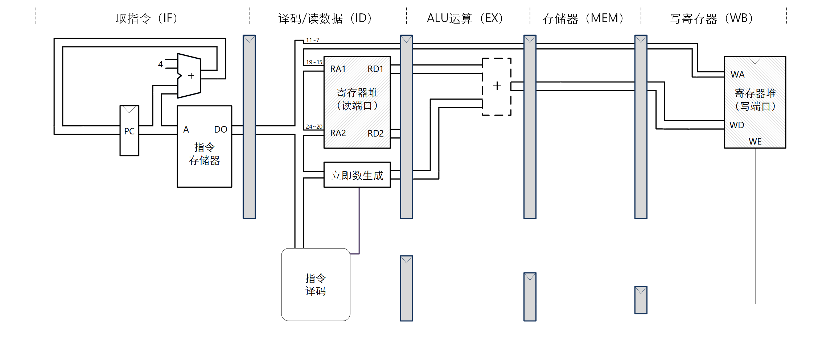
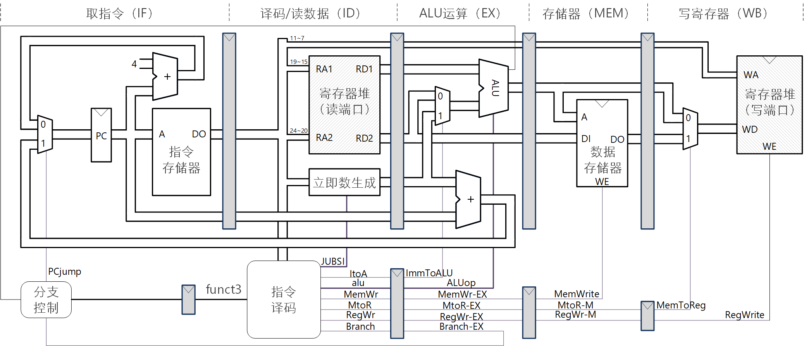

实现23条指令的简单流水线
参考设计：addi指令的流水线
实验材料中给出了图 1电路的HDL代码，它仅支持addi rd,rs1,imm指令。

图 1. 仅支持addi rd,rs1,imm指令的数据通路示例
阅读实验材料中给出的CPU 模块的HDL代码，其他文件与单周期的addi参考设计相同；编译后在实验系统上验证。【提示】单周期addi参考设计中的立即数生成模块有错误，应替换为自己改正过的。
实验任务
1. 实现23条指令的简单流水线
实现支持23条指令的五级流水线RISC-V。23条指令是前面单周期已经实现的，包括：I型运算类指令、R型运算类指令、sw指令、lw指令、分支指令。“简单”流水线是指没有处理冲突。
数据通路如图 2。 【提示】指令译码识别分支类指令产生Branch信号，然后根据源操作数的比较结果产生PCjump信号；因为PCjump信号用来选择转移地址，所以它应和转移地址同步产生，为便于机器考核，要求在EX阶段产生。

图 2. 支持23指令的五级流水线数据通路
2. 调试支持
在设计代码的调试支持部分需要增加与虚拟面板对应的观察信号和数据。因为观察变量比较多，从虚拟面板上逐一查找比较费时，为节省大家时间，下面给出与给定虚拟面板对应的ws和wd结构体赋值的示例。自己的设计中，成员变量的命名不必与示例相同。流水线各个阶段的控制信号全部添加到了虚拟面板，但观察数据只添加了一部分，可以视需要自行添加。
always_comb begin
ws.WS18 = cBranch_id;
ws.WS17 = cImmToALU_id;
ws.WS16[4:0] = cImm_type;
ws.WS15[3:0] = cALUop_id;
ws.WS14 = cMemWrite_id;
ws.WS13 = cMemToReg_id;
ws.WS12 = cRegWrite_id;
ws.WS11 = cBranch_ex;
ws.WS10 = cImmToALU_ex;
ws.WS9 [3:0] = cALUop_ex;
ws.WS8 = cMemWrite_ex;
ws.WS7 = cMemToReg_ex;
ws.WS6 = cRegWrite_ex;
ws.WS5 = cMemWrite_mem;
ws.WS4 = cMemToReg_mem;
ws.WS3 = cRegWrite_mem;
ws.WS2 = cMemToReg_wb;
ws.WS1 = cPCjump;
ws.WS0 = cRegWrite_wb;
end
always_comb begin
wd.WD10[31:0] = aluOut_mem;
wd.WD9 [31:0] = immData_ex;
wd.WD8 [31:0] = regReadData2_ex;
wd.WD7 [31:0] = regReadData1_ex;
wd.WD6 [4:0] = ra2;
wd.WD5 [4:0] = ra1;
wd.WD4 [31:0] = regWriteData_wb;
wd.WD3 [4:0] = wa_wb;
wd.WD2 [31:0] = instr_if;
wd.WD1 [31:0] = pc_if;
wd.WD0 [31:0] = nextPC;
end